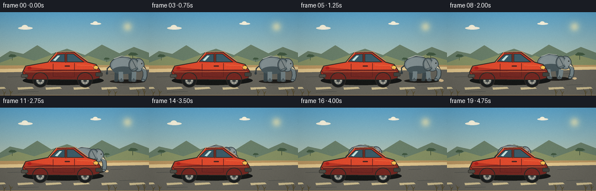
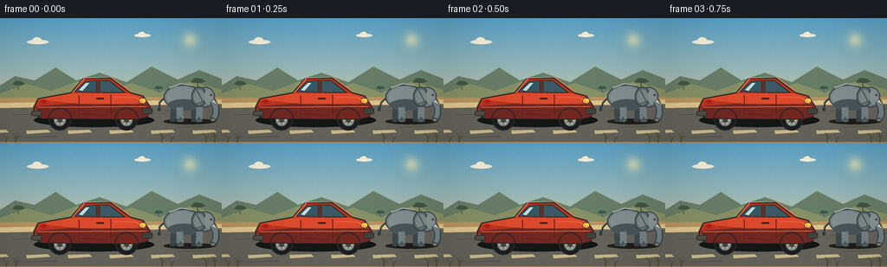

CODING AGENTS AS PIXEL WORLD MODELS
traex/GPT-5.6-Sol · dynamic_spatial_relationship_0064
点击播放 · 原生 RGB 像素
逐轮保存的候选
回放视频、检查图与代码变化。
每份候选均可单独播放。实际图片检查记录在下方工具轨迹中。
候选 01播放与检查图
点击播放 · 原生 RGB 像素


展开代码变化
--- 上一保存版本
+++ 本次保存版本
@@ -0,0 +1,225 @@
+from pathlib import Path
+import math
+import numpy as np
+from PIL import Image, ImageDraw, ImageFilter
+import artifact_io
+
+W, H, N = 256, 144, 20
+SS = 4
+rng = np.random.default_rng(6401)
+
+# Virtual-canvas helpers: draw at 4x and downsample for clean illustrated edges.
+def box(b): return tuple(int(round(v * SS)) for v in b)
+def pts(p): return [(int(round(x * SS)), int(round(y * SS))) for x, y in p]
+def wd(v): return max(1, int(round(v * SS)))
+
+def ellipse(d, b, fill, outline=None, width=1):
+ d.ellipse(box(b), fill=fill, outline=outline, width=wd(width) if outline else 1)
+def polygon(d, p, fill, outline=None, width=1):
+ d.polygon(pts(p), fill=fill)
+ if outline:
+ d.line(pts(p + [p[0]]), fill=outline, width=wd(width), joint='curve')
+def line(d, p, fill, width, joint='curve'):
+ d.line(pts(p), fill=fill, width=wd(width), joint=joint)
+def rounded(d, b, radius, fill, outline=None, width=1):
+ d.rounded_rectangle(box(b), radius=wd(radius), fill=fill, outline=outline,
+ width=wd(width) if outline else 1)
+
+def background(frame):
+ h, w = H*SS, W*SS
+ yy = np.linspace(0, 1, h)[:, None, None]
+ top = np.array([92, 165, 204], float)[None,None,:]
+ bottom = np.array([239, 210, 152], float)[None,None,:]
+ sky = top*(1-yy) + bottom*yy
+ arr = np.repeat(sky, w, axis=1)
+ im = Image.fromarray(np.uint8(np.clip(arr,0,255)), 'RGB').convert('RGBA')
+ d = ImageDraw.Draw(im, 'RGBA')
+ # Sun and soft halo.
+ glow = Image.new('RGBA', im.size, (0,0,0,0)); gd = ImageDraw.Draw(glow, 'RGBA')
+ for r, a in [(20,8),(14,12),(9,18)]: ellipse(gd,(219-r,25-r,219+r,25+r),(255,236,174,a))
+ ellipse(gd,(213,19,225,31),(255,241,180,215))
+ glow = glow.filter(ImageFilter.GaussianBlur(wd(4)))
+ im = Image.alpha_composite(im, glow); d = ImageDraw.Draw(im,'RGBA')
+ # Distant clouds.
+ for x,y,s in [(31,25,1.0),(155,18,.75)]:
+ ellipse(d,(x,y,x+25*s,y+5*s),(244,240,221,65))
+ ellipse(d,(x+6*s,y-3*s,x+17*s,y+5*s),(250,244,222,55))
+ # Hills and scrubland in atmospheric layers.
+ polygon(d,[(-5,81),(17,67),(40,72),(64,57),(88,72),(115,63),(146,74),(175,56),(205,71),(230,60),(261,72),(261,98),(-5,98)],(105,126,105,255))
+ polygon(d,[(-5,89),(31,76),(59,84),(90,73),(121,88),(151,75),(184,86),(220,73),(261,84),(261,101),(-5,101)],(135,145,101,255))
+ # Sparse acacia silhouettes.
+ for x,y,s in [(21,83,.65),(228,82,.8),(183,86,.48)]:
+ line(d,[(x,y),(x,y-12*s)],(64,80,61,220),1.2*s)
+ polygon(d,[(x-10*s,y-11*s),(x-4*s,y-16*s),(x+6*s,y-15*s),(x+12*s,y-11*s),(x+6*s,y-9*s),(x-8*s,y-9*s)],(65,88,65,220))
+ # Ochre roadside and paved road with perspective edge.
+ polygon(d,[(-2,92),(258,91),(258,146),(-2,146)],(185,150,99,255))
+ polygon(d,[(-2,98),(258,94),(258,143),(-2,143)],(103,101,92,255))
+ polygon(d,[(-2,98),(258,94),(258,99),(-2,104)],(225,198,142,255))
+ # Road wear and lane dashes.
+ for x in range(-18, 280, 48):
+ polygon(d,[(x,130),(x+25,129),(x+28,132),(x+1,134)],(206,190,145,115))
+ for x,y,l in [(13,112,30),(190,107,21),(31,138,35),(205,126,28),(102,101,15)]:
+ line(d,[(x,y),(x+l,y-1)],(69,72,69,45),.7)
+ return im
+
+def draw_elephant(im, cx, ground, sc, phase, moving, frame):
+ # The whole animal is painted before the car, so overlap reads as "behind".
+ d = ImageDraw.Draw(im, 'RGBA')
+ def P(x,y): return (cx+x*sc, ground+y*sc)
+ def B(x0,y0,x1,y1):
+ a=P(x0,y0); b=P(x1,y1); return (a[0],a[1],b[0],b[1])
+ edge=(51,61,65,255); dark=(75,87,91,255); grey=(117,132,135,255)
+ light=(148,158,157,255); deep=(61,74,78,255)
+ # Ground shadow follows depth.
+ ellipse(d,(cx-30*sc,ground-4*sc,cx+34*sc,ground+3*sc),(32,31,28,72))
+ # Leg stride. Feet stay close to ground, knees and lower legs swing.
+ stride = math.sin(phase) * (5 if moving else .7)
+ stride2 = math.sin(phase+math.pi) * (5 if moving else .7)
+ # Far legs first.
+ for lx, swing in [(-18,stride2),(7,stride)]:
+ line(d,[P(lx,-17),P(lx+swing*.45,-8),P(lx+swing, -1.5)],deep,7*sc)
+ ellipse(d,B(lx+swing-4,-4,lx+swing+4,0),(56,68,71,255))
+ # Tail behind body.
+ tail_sway=math.sin(phase*.65)*2
+ line(d,[P(-27,-31),P(-35,-24),P(-36+tail_sway,-16)],edge,2.2*sc)
+ ellipse(d,B(-38+tail_sway,-18,-34+tail_sway,-13),edge)
+ # Body volume: layered ellipses give softly modeled form.
+ ellipse(d,B(-30,-46,18,-15),grey,edge,max(1,1.2*sc))
+ ellipse(d,B(-26,-43,10,-18),(131,144,146,180))
+ # Belly soft shade.
+ ellipse(d,B(-25,-28,15,-14),(72,87,91,60))
+ # Near legs.
+ for lx, swing in [(-10,stride),(14,stride2)]:
+ line(d,[P(lx,-18),P(lx+swing*.25,-9),P(lx+swing,-1.5)],grey,8.2*sc)
+ line(d,[P(lx+swing,-6),P(lx+swing,-1.5)],dark,2.0*sc)
+ ellipse(d,B(lx+swing-4.7,-4,lx+swing+4.8,.2),dark)
+ # pale toenail ticks
+ for off in (-2,1): line(d,[P(lx+swing+off,-2),P(lx+swing+off+.5,-.8)],(173,174,163,180),.65*sc)
+ # Head and huge ear.
+ ellipse(d,B(10,-43,33,-18),grey,edge,max(1,1.1*sc))
+ ellipse(d,B(4,-43,23,-19),(91,107,111,255),edge,max(1,1.0*sc))
+ ellipse(d,B(7,-40,20,-22),(129,139,139,150))
+ # Forehead highlight and eye.
+ ellipse(d,B(20,-40,30,-22),(139,150,150,125))
+ ellipse(d,B(27.0,-34.5,29.1,-32.2),(24,29,29,255))
+ ellipse(d,B(27.55,-34.2,28.15,-33.6),(245,230,194,220))
+ # Trunk: curved descending stroke and rounded tip.
+ trunk_sway=(math.sin(phase+.7)*2.4 if moving else math.sin(frame*.35)*1.0)
+ tp=[P(30,-26),P(34,-18),P(34+trunk_sway*.3,-10),P(31+trunk_sway,-2.5)]
+ line(d,tp,edge,8.4*sc)
+ line(d,tp,grey,6.0*sc)
+ ellipse(d,B(27+trunk_sway,-5,34+trunk_sway,0),grey,edge,max(1,.7*sc))
+ # Ear fold, tusk and face detail.
+ line(d,[P(11,-39),P(18,-25),P(10,-22)],(59,73,77,150),1.1*sc)
+ polygon(d,[P(29,-25),P(38,-20),P(31,-28)],(235,223,190,255),outline=(102,101,87,190),width=max(.5,.7*sc))
+ # Back rim highlight.
+ line(d,[P(-23,-42),P(-9,-47),P(6,-45)],(183,188,181,130),1.2*sc)
+
+
+def draw_dust(im, cx, ground, frame, moving):
+ if not moving: return
+ d=ImageDraw.Draw(im,'RGBA')
+ # deterministic little puffs trailing the elephant's prior direction (right).
+ age=(frame-4)%5
+ for j in range(5):
+ x=cx+20+j*4 + math.sin(frame*1.1+j)*2
+ y=ground-1-j%2
+ r=1.5+(j+age%2)*.45
+ ellipse(d,(x-r,y-r*.55,x+r,y+r*.55),(218,190,143,max(16,65-j*9)))
+
+def draw_car(im, frame):
+ d=ImageDraw.Draw(im,'RGBA')
+ ink=(45,42,38,255); rubber=(27,30,31,255)
+ red=(185,54,37,255); red_hi=(223,74,45,255); red_dark=(116,40,34,255)
+ # Cast shadow.
+ ellipse(d,(39,110,178,126),(21,23,22,105))
+ # Wheels behind body.
+ for x in (69,146):
+ ellipse(d,(x-13,105,x+13,130),rubber,ink,1.2)
+ ellipse(d,(x-7.5,110.5,x+7.5,125.5),(144,145,137,255),(52,55,55,255),1)
+ ellipse(d,(x-3,115,x+3,121),(65,70,71,255))
+ for a in range(0,360,60):
+ q=math.radians(a)
+ line(d,[(x+3*math.cos(q),118+3*math.sin(q)),(x+6*math.cos(q),118+6*math.sin(q))],(220,214,191,190),.65)
+ # Main silhouette and hood, clearly foreground.
+ body=[(39,103),(44,93),(82,86),(96,70),(127,69),(150,86),(165,90),(173,102),(170,114),(158,117),(48,116),(40,111)]
+ polygon(d,body,red,ink,1.5)
+ polygon(d,[(40,102),(91,98),(169,99),(173,105),(170,113),(158,116),(48,115)],red_dark)
+ polygon(d,[(43,94),(83,87),(149,87),(164,91),(168,99),(91,99)],red_hi)
+ # Cabin windows.
+ polygon(d,[(86,85),(99,73),(111,72),(111,86)],(54,86,99,255),ink,1)
+ polygon(d,[(115,72),(126,72),(144,86),(115,86)],(59,90,102,255),ink,1)
+ # Sky glints on glass; subtle frame-to-frame glint.
+ glint=frame*1.7%24
+ polygon(d,[(91+glint*.18,83),(99+glint*.18,75),(103+glint*.18,75),(95+glint*.18,84)],(195,224,218,75))
+ line(d,[(113,71),(113,87)],ink,1.3)
+ # Doors and trim.
+ line(d,[(91,89),(91,111),(128,112),(128,88)],(91,34,31,220),1)
+ rounded(d,(111,92,120,94),1,(75,38,34,255))
+ line(d,[(43,103),(169,102)],(239,119,71,160),1)
+ # Bumpers and lights.
+ rounded(d,(164,104,176,111),2,(66,67,62,255),ink,.7)
+ ellipse(d,(160,92,169,99),(249,198,84,255),ink,.8)
+ rounded(d,(36,107,48,113),2,(82,81,73,255),ink,.7)
+ ellipse(d,(47,94,54,99),(178,31,28,255))
+ # wheel arch outlines painted on top.
+ for x in (69,146):
+ # upper arc approximated with line segments
+ arc=[]
+ for a in np.linspace(math.pi,2*math.pi,18): arc.append((x+13*math.cos(a),116+12*math.sin(a)))
+ line(d,arc,ink,1.4)
+ # highlight along roof and fender.
+ line(d,[(84,86),(98,69),(128,68),(151,85)],(246,132,84,150),1.1)
+ line(d,[(132,91),(158,92),(166,99)],(249,126,72,125),.8)
+
+
+def foreground(im, frame):
+ d=ImageDraw.Draw(im,'RGBA')
+ # A few near-camera grasses and warm flecks anchor depth.
+ for i,x in enumerate([7,18,187,198,238,248]):
+ h=5+(i*3)%8
+ sway=math.sin(frame*.12+i)*.6
+ col=(87,76,44,180)
+ line(d,[(x,144),(x+sway,144-h)],col,1)
+ line(d,[(x,140),(x-3+sway,136-h*.35)],col,.7)
+ line(d,[(x,141),(x+3+sway,138-h*.2)],col,.7)
+
+
+def motion_state(i):
+ # Establish the requested initial relation, then ease diagonally into depth.
+ if i <= 3:
+ p=0.0
+ elif i >= 16:
+ p=1.0
+ else:
+ u=(i-3)/13.0
+ p=u*u*(3-2*u)
+ cx=217 + (114-217)*p
+ ground=120 + (106-120)*p
+ sc=.94 + (.91-.94)*p
+ return p,cx,ground,sc
+
+# Fixed subtle film grain pattern avoids temporal noise/flicker.
+static_grain=rng.normal(0,1.15,(H,W,1)).astype(np.float32)
+frames=[]
+for i in range(N):
+ im=background(i)
+ p,cx,ground,sc=motion_state(i)
+ moving=(i>=4 and i<=16)
+ phase=(i-3)*1.75
+ draw_dust(im,cx,ground,i,moving)
+ draw_elephant(im,cx,ground,sc,phase,moving,i)
+ draw_car(im,i)
+ foreground(im,i)
+ im=im.convert('RGB').resize((W,H),Image.Resampling.LANCZOS)
+ arr=np.asarray(im,dtype=np.float32)
+ # restrained vignette and grain to integrate the vector layers.
+ yy,xx=np.mgrid[0:H,0:W]
+ vign=1-0.075*((xx-W/2)/(W/2))**2-0.055*((yy-H/2)/(H/2))**2
+ arr=arr*vign[...,None]+static_grain
+ arr=np.uint8(np.clip(arr,0,255))
+ frames.append(arr)
+frames=np.stack(frames,axis=0)
+assert frames.shape==(20,144,256,3) and frames.dtype==np.uint8
+artifact_io.save(frames, Path(__file__).resolve().parent)
+print('saved',frames.shape,frames.dtype,'range',int(frames.min()),int(frames.max()))
可观测工具轨迹
实际执行的命令与返回图片。
命令 1exit 0
/bin/bash -lc "cat prompt.txt && printf '\\n--- GENERATION_RULES ---\\n' && cat GENERATION_RULES.md"
命令 2exit 0
/bin/bash -lc "cat task_spec.json && printf '\\n--- FILES ---\\n' && find . -maxdepth 2 -type f -printf '%p\\n' | sort"
命令 3exit 0
/bin/bash -lc "command -v ffmpeg || true; command -v python3 || true; python3 - <<'PY' mods=['PIL','numpy','cv2','imageio','moviepy','cairo'] for m in mods: try: x=__import__(m); print(m, 'OK', getattr(x,'__version__','')) except Exception as e: print(m,'NO',type(e).__name__) PY"
命令 4exit 0
/bin/bash -lc 'cat artifact_io.py'
命令 5exit 0
/bin/bash -lc "cat > generate.py <<'PY'
from pathlib import Path
import math
import numpy as np
from PIL import Image, ImageDraw, ImageFilter
import artifact_io
W, H, N = 256, 144, 20
SS = 4
rng = np.random.default_rng(6401)
# Virtual-canvas helpers: draw at 4x and downsample for clean illustrated edges.
def box(b): return tuple(int(round(v * SS)) for v in b)
def pts(p): return [(int(round(x * SS)), int(round(y * SS))) for x, y in p]
def wd(v): return max(1, int(round(v * SS)))
def ellipse(d, b, fill, outline=None, width=1):
d.ellipse(box(b), fill=fill, outline=outline, width=wd(width) if outline else 1)
def polygon(d, p, fill, outline=None, width=1):
d.polygon(pts(p), fill=fill)
if outline:
d.line(pts(p + [p[0]]), fill=outline, width=wd(width), joint='curve')
def line(d, p, fill, width, joint='curve'):
d.line(pts(p), fill=fill, width=wd(width), joint=joint)
def rounded(d, b, radius, fill, outline=None, width=1):
d.rounded_rectangle(box(b), radius=wd(radius), fill=fill, outline=outline,
width=wd(width) if outline else 1)
def background(frame):
h, w = H*SS, W*SS
yy = np.linspace(0, 1, h)[:, None, None]
top = np.array([92, 165, 204], float)[None,None,:]
bottom = np.array([239, 210, 152], float)[None,None,:]
sky = top*(1-yy) + bottom*yy
arr = np.repeat(sky, w, axis=1)
im = Image.fromarray(np.uint8(np.clip(arr,0,255)), 'RGB').convert('RGBA')
d = ImageDraw.Draw(im, 'RGBA')
# Sun and soft halo.
glow = Image.new('RGBA', im.size, (0,0,0,0)); gd = ImageDraw.Draw(glow, 'RGBA')
for r, a in [(20,8),(14,12),(9,18)]: ellipse(gd,(219-r,25-r,219+r,25+r),(255,236,174,a))
ellipse(gd,(213,19,225,31),(255,241,180,215))
glow = glow.filter(ImageFilter.GaussianBlur(wd(4)))
im = Image.alpha_composite(im, glow); d = ImageDraw.Draw(im,'RGBA')
# Distant clouds.
for x,y,s in [(31,25,1.0),(155,18,.75)]:
ellipse(d,(x,y,x+25*s,y+5*s),(244,240,221,65))
ellipse(d,(x+6*s,y-3*s,x+17*s,y+5*s),(250,244,222,55))
# Hills and scrubland in atmospheric layers.
polygon(d,[(-5,81),(17,67),(40,72),(64,57),(88,72),(115,63),(146,74),(175,56),(205,71),(230,60),(261,72),(261,98),(-5,98)],(105,126,105,255))
polygon(d,[(-5,89),(31,76),(59,84),(90,73),(121,88),(151,75),(184,86),(220,73),(261,84),(261,101),(-5,101)],(135,145,101,255))
# Sparse acacia silhouettes.
for x,y,s in [(21,83,.65),(228,82,.8),(183,86,.48)]:
line(d,[(x,y),(x,y-12*s)],(64,80,61,220),1.2*s)
polygon(d,[(x-10*s,y-11*s),(x-4*s,y-16*s),(x+6*s,y-15*s),(x+12*s,y-11*s),(x+6*s,y-9*s),(x-8*s,y-9*s)],(65,88,65,220))
# Ochre roadside and paved road with perspective edge.
polygon(d,[(-2,92),(258,91),(258,146),(-2,146)],(185,150,99,255))
polygon(d,[(-2,98),(258,94),(258,143),(-2,143)],(103,101,92,255))
polygon(d,[(-2,98),(258,94),(258,99),(-2,104)],(225,198,142,255))
# Road wear and lane dashes.
for x in range(-18, 280, 48):
polygon(d,[(x,130),(x+25,129),(x+28,132),(x+1,134)],(206,190,145,115))
for x,y,l in [(13,112,30),(190,107,21),(31,138,35),(205,126,28),(102,101,15)]:
line(d,[(x,y),(x+l,y-1)],(69,72,69,45),.7)
return im
def draw_elephant(im, cx, ground, sc, phase, moving, frame):
# The whole animal is painted before the car, so overlap reads as \"behind\".
d = ImageDraw.Draw(im, 'RGBA')
def P(x,y): return (cx+x*sc, ground+y*sc)
def B(x0,y0,x1,y1):
a=P(x0,y0); b=P(x1,y1); return (a[0],a[1],b[0],b[1])
edge=(51,61,65,255); dark=(75,87,91,255); grey=(117,132,135,255)
light=(148,158,157,255); deep=(61,74,78,255)
# Ground shadow follows depth.
ellipse(d,(cx-30*sc,ground-4*sc,cx+34*sc,ground+3*sc),(32,31,28,72))
# Leg stride. Feet stay close to ground, knees and lower legs swing.
stride = math.sin(phase) * (5 if moving else .7)
stride2 = math.sin(phase+math.pi) * (5 if moving else .7)
# Far legs first.
for lx, swing in [(-18,stride2),(7,stride)]:
line(d,[P(lx,-17),P(lx+swing*.45,-8),P(lx+swing, -1.5)],deep,7*sc)
ellipse(d,B(lx+swing-4,-4,lx+swing+4,0),(56,68,71,255))
# Tail behind body.
tail_sway=math.sin(phase*.65)*2
line(d,[P(-27,-31),P(-35,-24),P(-36+tail_sway,-16)],edge,2.2*sc)
ellipse(d,B(-38+tail_sway,-18,-34+tail_sway,-13),edge)
# Body volume: layered ellipses give softly modeled form.
ellipse(d,B(-30,-46,18,-15),grey,edge,max(1,1.2*sc))
ellipse(d,B(-26,-43,10,-18),(131,144,146,180))
# Belly soft shade.
ellipse(d,B(-25,-28,15,-14),(72,87,91,60))
# Near legs.
for lx, swing in [(-10,stride),(14,stride2)]:
line(d,[P(lx,-18),P(lx+swing*.25,-9),P(lx+swing,-1.5)],grey,8.2*sc)
line(d,[P(lx+swing,-6),P(lx+swing,-1.5)],dark,2.0*sc)
ellipse(d,B(lx+swing-4.7,-4,lx+swing+4.8,.2),dark)
# pale toenail ticks
for off in (-2,1): line(d,[P(lx+swing+off,-2),P(lx+swing+off+.5,-.8)],(173,174,163,180),.65*sc)
# Head and huge ear.
ellipse(d,B(10,-43,33,-18),grey,edge,max(1,1.1*sc))
ellipse(d,B(4,-43,23,-19),(91,107,111,255),edge,max(1,1.0*sc))
ellipse(d,B(7,-40,20,-22),(129,139,139,150))
# Forehead highlight and eye.
ellipse(d,B(20,-40,30,-22),(139,150,150,125))
ellipse(d,B(27.0,-34.5,29.1,-32.2),(24,29,29,255))
ellipse(d,B(27.55,-34.2,28.15,-33.6),(245,230,194,220))
# Trunk: curved descending stroke and rounded tip.
trunk_sway=(math.sin(phase+.7)*2.4 if moving else math.sin(frame*.35)*1.0)
tp=[P(30,-26),P(34,-18),P(34+trunk_sway*.3,-10),P(31+trunk_sway,-2.5)]
line(d,tp,edge,8.4*sc)
line(d,tp,grey,6.0*sc)
ellipse(d,B(27+trunk_sway,-5,34+trunk_sway,0),grey,edge,max(1,.7*sc))
# Ear fold, tusk and face detail.
line(d,[P(11,-39),P(18,-25),P(10,-22)],(59,73,77,150),1.1*sc)
polygon(d,[P(29,-25),P(38,-20),P(31,-28)],(235,223,190,255),outline=(102,101,87,190),width=max(.5,.7*sc))
# Back rim highlight.
line(d,[P(-23,-42),P(-9,-47),P(6,-45)],(183,188,181,130),1.2*sc)
def draw_dust(im, cx, ground, frame, moving):
if not moving: return
d=ImageDraw.Draw(im,'RGBA')
# deterministic little puffs trailing the elephant's prior direction (right).
age=(frame-4)%5
for j in range(5):
x=cx+20+j*4 + math.sin(frame*1.1+j)*2
y=ground-1-j%2
r=1.5+(j+age%2)*.45
ellipse(d,(x-r,y-r*.55,x+r,y+r*.55),(218,190,143,max(16,65-j*9)))
def draw_car(im, frame):
d=ImageDraw.Draw(im,'RGBA')
ink=(45,42,38,255); rubber=(27,30,31,255)
red=(185,54,37,255); red_hi=(223,74,45,255); red_dark=(116,40,34,255)
# Cast shadow.
ellipse(d,(39,110,178,126),(21,23,22,105))
# Wheels behind body.
for x in (69,146):
ellipse(d,(x-13,105,x+13,130),rubber,ink,1.2)
ellipse(d,(x-7.5,110.5,x+7.5,125.5),(144,145,137,255),(52,55,55,255),1)
ellipse(d,(x-3,115,x+3,121),(65,70,71,255))
for a in range(0,360,60):
q=math.radians(a)
line(d,[(x+3*math.cos(q),118+3*math.sin(q)),(x+6*math.cos(q),118+6*math.sin(q))],(220,214,191,190),.65)
# Main silhouette and hood, clearly foreground.
body=[(39,103),(44,93),(82,86),(96,70),(127,69),(150,86),(165,90),(173,102),(170,114),(158,117),(48,116),(40,111)]
polygon(d,body,red,ink,1.5)
polygon(d,[(40,102),(91,98),(169,99),(173,105),(170,113),(158,116),(48,115)],red_dark)
polygon(d,[(43,94),(83,87),(149,87),(164,91),(168,99),(91,99)],red_hi)
# Cabin windows.
polygon(d,[(86,85),(99,73),(111,72),(111,86)],(54,86,99,255),ink,1)
polygon(d,[(115,72),(126,72),(144,86),(115,86)],(59,90,102,255),ink,1)
# Sky glints on glass; subtle frame-to-frame glint.
glint=frame*1.7%24
polygon(d,[(91+glint*.18,83),(99+glint*.18,75),(103+glint*.18,75),(95+glint*.18,84)],(195,224,218,75))
line(d,[(113,71),(113,87)],ink,1.3)
# Doors and trim.
line(d,[(91,89),(91,111),(128,112),(128,88)],(91,34,31,220),1)
rounded(d,(111,92,120,94),1,(75,38,34,255))
line(d,[(43,103),(169,102)],(239,119,71,160),1)
# Bumpers and lights.
rounded(d,(164,104,176,111),2,(66,67,62,255),ink,.7)
ellipse(d,(160,92,169,99),(249,198,84,255),ink,.8)
rounded(d,(36,107,48,113),2,(82,81,73,255),ink,.7)
ellipse(d,(47,94,54,99),(178,31,28,255))
# wheel arch outlines painted on top.
for x in (69,146):
# upper arc approximated with line segments
arc=[]
for a in np.linspace(math.pi,2*math.pi,18): arc.append((x+13*math.cos(a),116+12*math.sin(a)))
line(d,arc,ink,1.4)
# highlight along roof and fender.
line(d,[(84,86),(98,69),(128,68),(151,85)],(246,132,84,150),1.1)
line(d,[(132,91),(158,92),(166,99)],(249,126,72,125),.8)
def foreground(im, frame):
d=ImageDraw.Draw(im,'RGBA')
# A few near-camera grasses and warm flecks anchor depth.
for i,x in enumerate([7,18,187,198,238,248]):
h=5+(i*3)%8
sway=math.sin(frame*.12+i)*.6
col=(87,76,44,180)
line(d,[(x,144),(x+sway,144-h)],col,1)
line(d,[(x,140),(x-3+sway,136-h*.35)],col,.7)
line(d,[(x,141),(x+3+sway,138-h*.2)],col,.7)
def motion_state(i):
# Establish the requested initial relation, then ease diagonally into depth.
if i <= 3:
p=0.0
elif i >= 16:
p=1.0
else:
u=(i-3)/13.0
p=u*u*(3-2*u)
cx=217 + (114-217)*p
ground=120 + (106-120)*p
sc=.94 + (.91-.94)*p
return p,cx,ground,sc
# Fixed subtle film grain pattern avoids temporal noise/flicker.
static_grain=rng.normal(0,1.15,(H,W,1)).astype(np.float32)
frames=[]
for i in range(N):
im=background(i)
p,cx,ground,sc=motion_state(i)
moving=(i>=4 and i<=16)
phase=(i-3)*1.75
draw_dust(im,cx,ground,i,moving)
draw_elephant(im,cx,ground,sc,phase,moving,i)
draw_car(im,i)
foreground(im,i)
im=im.convert('RGB').resize((W,H),Image.Resampling.LANCZOS)
arr=np.asarray(im,dtype=np.float32)
# restrained vignette and grain to integrate the vector layers.
yy,xx=np.mgrid[0:H,0:W]
vign=1-0.075*((xx-W/2)/(W/2))**2-0.055*((yy-H/2)/(H/2))**2
arr=arr*vign[...,None]+static_grain
arr=np.uint8(np.clip(arr,0,255))
frames.append(arr)
frames=np.stack(frames,axis=0)
assert frames.shape==(20,144,256,3) and frames.dtype==np.uint8
artifact_io.save(frames, Path(__file__).resolve().parent)
print('saved',frames.shape,frames.dtype,'range',int(frames.min()),int(frames.max()))
PY
python3 generate.py"命令 6exit 0
/bin/bash -lc 'ls -lh generate.py pixels.npz inspection.png transition_check.png index.html frames/00.png frames/10.png frames/19.png && python3 -m py_compile generate.py artifact_io.py'
命令 7exit 0
/bin/bash -lc "python3 - <<'PY'
from PIL import Image
import numpy as np, hashlib
ims=[]
for i in range(20):
p=f'frames/{i:02d}.png'; a=np.array(Image.open(p)); ims.append(a)
print(f'{i:02d}', a.shape, hashlib.sha256(a.tobytes()).hexdigest()[:10])
a=np.stack(ims)
print('stack',a.shape,a.dtype,a.min(),a.max())
print('mean_abs_frame_deltas', [round(float(np.abs(a[i].astype(int)-a[i-1].astype(int)).mean()),2) for i in range(1,20)])
z=np.load('pixels.npz')['pixels']
print('npz',z.shape,z.dtype)
# Reconstitute RGB and confirm exact identity.
r=((z>>16)&255).transpose(2,0,1); g=((z>>8)&255).transpose(2,0,1); b=(z&255).transpose(2,0,1)
rec=np.stack([r,g,b],-1).astype(np.uint8)
print('npz_exact',np.array_equal(a,rec))
PY"保存候选 1 份；完成命令 7 次；可验证图片返回 0 张。原始 API 响应与完整日志保留在本地。